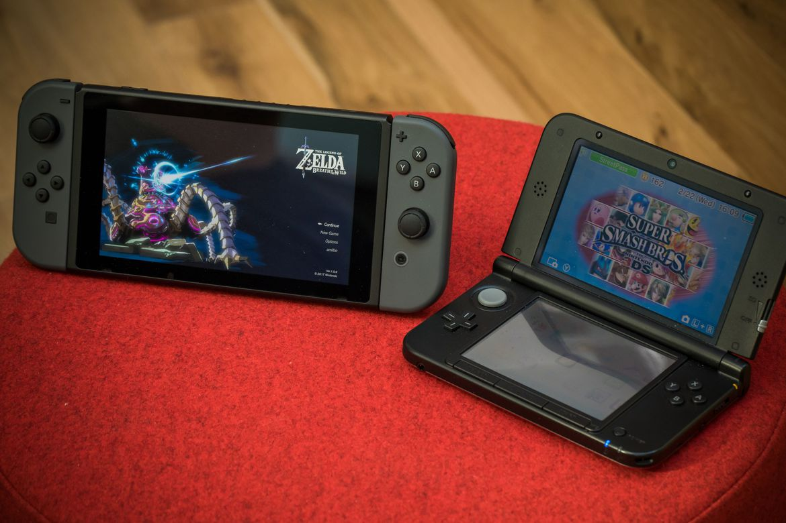

Oh, wow. About me huh? Well, if you insist. Let's see...
My name is Erin. You can call me in any various nicknames (because people have different nicknames for me. Top contender is 'Eren'.)
Born in the year of 1997, I am currently 20 years old. Turning 21 in January 24.
I guess I could say I'm an introvert, INFJ. But so far nowadays I'm having a hard time convincing people.
I'm probably the most biggest Nintendo fan you'll ever meet.
Oh, you mean an autobiography? I see...
I won't say much, I'm a private person, but here goes.
I am the daughter of a doctor and a lawyer. I'm the eldest of the three siblings in the family.
I aspire to be a game developer someday.
Some people find me weird back when I was young, to the point that I was bullied for being so different from other people. I will admit I'm intelligent, but I was never the type to be the top person in class, probably because I'm too laid-back. Still now, actually.
I used to draw in the past, actually I thought I might end up as an animator someday, but I had discovered the wonderful world of programming around 2012 - starting with learning about Linux and its functionalities. (Arch Linux master race)
As I said earlier, I'm the Nintendo Freak. Nintendo was my first exposure to the gaming world, and later branched onto PC gaming (although I don't play PC as much as before). Today, I still have my Nintendo stuff with me - considering I always have my Switch around.

Aside from gaming, I think the other hobby I have is to code just about anything. It's why I probably have an advantage over others since the moment I go home, this is the first thing and last thing I do before I go to sleep. (Or maybe, not at all. Keep coding.)
Before BSIT, I have two previous courses, Pharmacy and Political Science. Both are influenced by my parents' profession. But my heart belongs to computers (and gaming).
Alright. That's all for now. Glad you get to know me a bit!